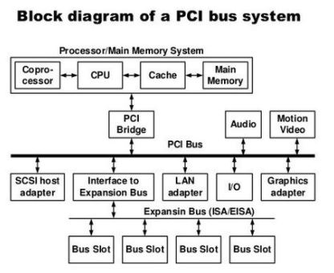

Write short note on PCI Bus.
- A Peripheral Component Interconnect Bus (PCI bus) connects the CPU and expansion boards such as modem cards, network cards and sound cards.
- These expansion boards are normally plugged into expansion slots on the motherboard.
- The PCI local bus is the general standard for a PC expansion bus, having replaced the Video
Electronics Standards Association (VESA) local bus and the Industry Standard Architecture (ISA) bus.
PCI has largely been replaced by USB.
- Most often, a PCI slot was used to connect sound and network cards.
- PCI at one time was used to connect video cards, but graphics demand from gaming made it inadequate for that use.
